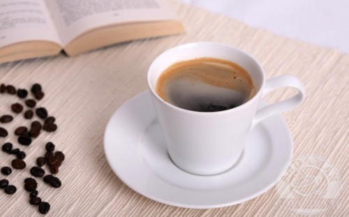
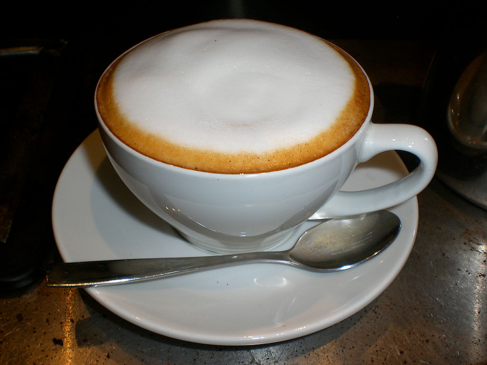
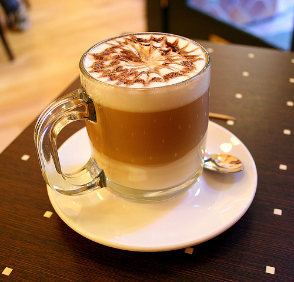
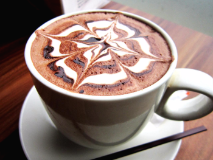
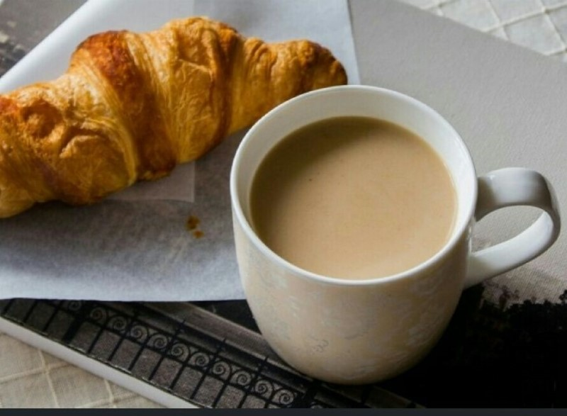
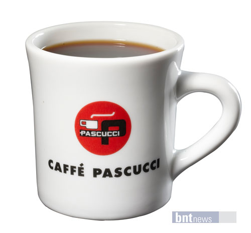

1.아메리카노
재료 : 에스프레소 + 물 + 설탕/시럽(선택)
어느 카페에서나 쉽게 접할 수 있는 커피로, 에스프레소에 물을 탄 커피라고도 불립니다.
에스프레소 대비 물의 양은 개인의 취향 차에 따라, 원두에 따라 다 다릅니다.
에스프레소와 1:2 비율로 넣으라는 이야기부터 에스프레소 30ml에 물 160~250ml를 쓰는 등 다양합니다.
미국식 커피라고 불리기도 했었는데, 커피를 진하게 마시는 편인 유럽인들과 다르게 미국인들은 커피를 옅고 푸짐하게 마시는 편이기 때문입니다.
아메리카노에 휘핑 크림을 얹으면 카페 아인슈패너가 됩니다.
2.카푸치노
재료 : 에스프레소 + 데운 우유 + 시나몬 가루
명칭이 가톨릭 남자 수도회인 카푸친 작은형제회의 수도복에서 유래된 커피입니다.
우유가 들어간 커피 중 우유 거품의 비율이 높아 커피 본연의 맛은 진한 편입니다.
에스프레소에 끓기 직전까지 데운 우유를 섞고, 그 위에 우유 거품을 얹는 형태로 만들어집니다.
우유 거품이 부드럽고 고울 수록 고급으로 통하며, 바리스타의 거품 기술에 품질이 좌우됩니다.
오스트리아에서 시작되었고, 2차 대전 이후 에스프레소 머신의 발달과 함께 세계로 퍼졌습니다.
이 커피를 기준으로 다양한 바리에이션의 커피가 존재합니다.
'카페 라떼'는 카푸치노와 비슷하지만 데운 우유의 비중이 카푸치노보다 큽니다.
'카페 브레베'는 데운 우유와 크림을 반씩 섞어서 에스프레소와 섞습니다.
'플랫 화이트'는 카푸치노에서 우유 거품을 제외한 형태입니다.
3.마키아토
재료 : 에스프레소 + 데운 우유
에스프레소와 우유를 섞는 카푸치노와 달리 두 재료를 섞지 않는다는 특징이 있습니다.
종류는 두 가지로, '라테 마키아토'와 '카페 마키아토'가 있습니다.
'라테 마키아토'는 잔에 스팀 밀크를 먼저 따르고 그 위에 에스프레소를 붓는 형식입니다.
'카페 마키아토'는 잔에 에스프레소를 먼저 따르고 그 위에 스팀 밀크로 무늬를 만드는 형식입니다.
라떼 마키아토에 캐러멜이나 바닐라 시럽을 타고 우유 거품 위에 캐러멜 소스를 뿌리면 카라멜 마끼아또가 됩니다.
4.카페 모카
재료 : 에스프레소 + 데운 우유 + 초콜릿 시럽
모카라는 커피 품종의 풍미를 재현하려는 시도에서 유래한 커피 레시피입니다.
에스프레소에 데운 우유와 초콜릿 시럽을 넣어서 만들고, 휘핑 크림을 올리기도 합니다.
초콜릿 시럽이 들어간 만큼 칼로리가 높은 편이고, 커피와 초콜릿의 총 카페인 양이 상당한 편입니다.
5.카페 오레
재료 : 드립 커피 + 데운 우유
커피를 마시고 속이 쓰린 것을 방지하려 한 의사가 우유를 넣은 것이 유래라고 합니다.
에스프레소가 아닌 드립 커피를 이용한다는 것이 가장 큰 차이입니다.
6.레드 아이
재료 : 드립 커피 + 에스프레소
드립 커피에 에스프레소 샷을 추가한 형태의 커피입니다.
밤새 파티하고 아침에 잠을깨기 위해서 마신게 시작한 것에 유래된 것으로 알려져 있습니다.
에스프레소 샷을 두 번 넣으면 '블랙아이', 세 번 넣으면 '데드 아이';라고 부릅니다.